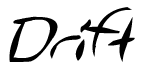

home
resume
Mr. Face

soundcloud
Controls - WASD, J / K
Note: This game is still being worked on
and was the result of the global game jam weekend.
Credits
Design - Troy Maynard
Art - Troy Maynard, Mitch Sterling
Animation - Troy Maynard
Theme Song - 1AD7 Productions (Adam Lee)
Sound - Troy Maynard
Programming - Paolo Usero
Prescott Maynard
Max Mayhew
Troy Maynard
Writing - Troy Maynard